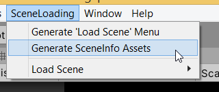
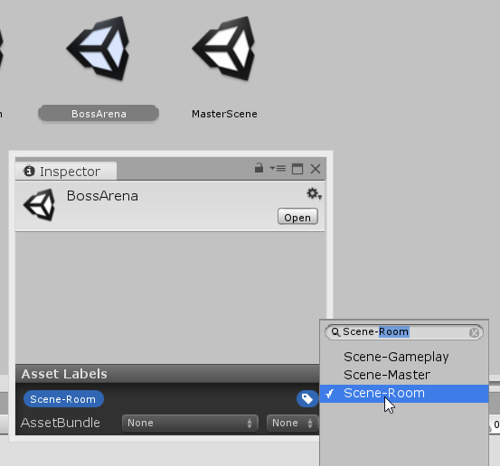
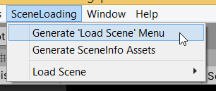
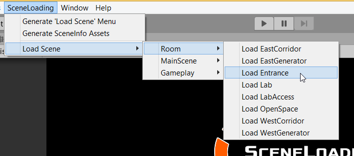

Editor Tools
Generate SceneInfo assets
- In Unity menu bar, under SceneLoading > Generate SceneInfo assets

This menu allows you to generate scriptable objects corresponding to your scene files, provided that you labeled these scenes properly beforehand.
For example, a scene file like "BossArena.unity" can be labeled with Scene-Room to identify this scene as a Room.

Running the tool will then create a RoomInfo asset called "BossArena.asset" in your Assets/ folder. You can then move it anywhere you like.
Additionnal notes
- The label put on the .unity file must start with
Scene-to be acknowledged by the tool. - A custom label like
Scene-MyOwnSceneTypewill also work, as long as you defined aMyOwnSceneTypeC# class inheriting fromSceneInfobeforehand. - Scenes having more than one
Scene-label will be ignored and issue a warning in the console. - Running the tool creates the corresponding scriptable object at the root of the
Assets/folder. If an asset file with the same name already exists here (at the root), it will be overwritten. Existing Assets located in subfolders are ignored.
Generate 'Load Scene' Menu
- In Unity menu bar, under SceneLoading > Generate 'Load Scene' Menu

This menu generates a script file that will append a new 'Load Scene' menu to the toolbar. This generated menu allows you to quickly load a scene in the Editor without going back into the Project Window.

Additionnal notes
- The tool uses the
SceneInfoassets found in the project, not the.unityfiles. - The tool generates a menu item for any ScriptableObject inheriting from the
SceneInfoclass, meaning your own subclasses will also be taken into account. - You may want to run this tool every time a scene is added to (or removed from) the project in order to update the generated menu.